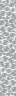
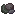

Create: Molten Metals
附属模组
Create: Molten Metals
这是什么
来自 mcmod 1.20.1 附属模组清单，共 66 个物品。
命名空间：
molten_metals 1.20.1 版本：本页物品与配方直接取自该版本的 jar。全部物品66
Ceramic Ingot Moldmolten_metals:ceramic_ingot_mold
Ingot Moldmolten_metals:ingot_mold
Molten Bismuthmolten_metals:molten_bismuth
没有工作台/机器配方
Bucket of Molten Bismuthmolten_metals:molten_bismuth_bucket
没有工作台/机器配方
Ceramic Ingot Mold of Molten Bismuthmolten_metals:molten_bismuth_ceramic_ingot_mold
Ingot Mold of Molten Bismuthmolten_metals:molten_bismuth_ingot_mold
Molten Brassmolten_metals:molten_brass
没有工作台/机器配方
Bucket of Molten Brassmolten_metals:molten_brass_bucket
没有工作台/机器配方
Ceramic Ingot Mold of Molten Brassmolten_metals:molten_brass_ceramic_ingot_mold
Ingot Mold of Molten Brassmolten_metals:molten_brass_ingot_mold
Molten Bronzemolten_metals:molten_bronze
没有工作台/机器配方
Bucket of Molten Bronzemolten_metals:molten_bronze_bucket
没有工作台/机器配方
Ceramic Ingot Mold of Molten Bronzemolten_metals:molten_bronze_ceramic_ingot_mold
Ingot Mold of Molten Bronzemolten_metals:molten_bronze_ingot_mold
Molten Coppermolten_metals:molten_copper
没有工作台/机器配方
Bucket of Molten Coppermolten_metals:molten_copper_bucket
没有工作台/机器配方
Ceramic Ingot Mold of Molten Coppermolten_metals:molten_copper_ceramic_ingot_mold
Ingot Mold of Molten Coppermolten_metals:molten_copper_ingot_mold
Molten Electrummolten_metals:molten_electrum
没有工作台/机器配方
Bucket of Molten Electrummolten_metals:molten_electrum_bucket
没有工作台/机器配方
Ceramic Ingot Mold of Molten Electrummolten_metals:molten_electrum_ceramic_ingot_mold
Ingot Mold of Molten Electrummolten_metals:molten_electrum_ingot_mold
Molten Goldmolten_metals:molten_gold
没有工作台/机器配方
Bucket of Molten Goldmolten_metals:molten_gold_bucket
没有工作台/机器配方
Ceramic Ingot Mold of Molten Goldmolten_metals:molten_gold_ceramic_ingot_mold
Ingot Mold of Molten Goldmolten_metals:molten_gold_ingot_mold
Molten Ironmolten_metals:molten_iron
没有工作台/机器配方
Bucket of Molten Ironmolten_metals:molten_iron_bucket
没有工作台/机器配方
Ceramic Ingot Mold of Molten Ironmolten_metals:molten_iron_ceramic_ingot_mold
Ingot Mold of Molten Ironmolten_metals:molten_iron_ingot_mold
Ceramic Ingot Mold of Molten Leadmolten_metals:molten_lead_ceramic_ingot_mold
Ingot Mold of Molten Leadmolten_metals:molten_lead_ingot_mold

Molten Mercurymolten_metals:molten_mercury
没有工作台/机器配方
Bucket of Molten Mercurymolten_metals:molten_mercury_bucket
没有工作台/机器配方
Molten Necromiummolten_metals:molten_necromium
没有工作台/机器配方
Bucket of Molten Necromiummolten_metals:molten_necromium_bucket
没有工作台/机器配方
Ceramic Ingot Mold of Molten Necromiummolten_metals:molten_necromium_ceramic_ingot_mold
Ingot Mold of Molten Necromiummolten_metals:molten_necromium_ingot_mold
Molten Netheritemolten_metals:molten_netherite
没有工作台/机器配方
Bucket of Molten Netheritemolten_metals:molten_netherite_bucket
没有工作台/机器配方
Ceramic Ingot Mold of Molten Netheritemolten_metals:molten_netherite_ceramic_ingot_mold
Ingot Mold of Molten Netheritemolten_metals:molten_netherite_ingot_mold
Molten Rose Goldmolten_metals:molten_rose_gold
没有工作台/机器配方
Bucket of Molten Rose Goldmolten_metals:molten_rose_gold_bucket
没有工作台/机器配方
Ceramic Ingot Mold of Molten Rose Goldmolten_metals:molten_rose_gold_ceramic_ingot_mold
没有工作台/机器配方
Ingot Mold of Molten Rose Goldmolten_metals:molten_rose_gold_ingot_mold
没有工作台/机器配方
Molten Silvermolten_metals:molten_silver
没有工作台/机器配方
Bucket of Molten Silvermolten_metals:molten_silver_bucket
没有工作台/机器配方
Ceramic Ingot Mold of Molten Silvermolten_metals:molten_silver_ceramic_ingot_mold
Ingot Mold of Molten Silvermolten_metals:molten_silver_ingot_mold
Molten Steelmolten_metals:molten_steel
没有工作台/机器配方
Bucket of Molten Steelmolten_metals:molten_steel_bucket
没有工作台/机器配方
Ceramic Ingot Mold of Molten Steelmolten_metals:molten_steel_ceramic_ingot_mold
Ingot Mold of Molten Steelmolten_metals:molten_steel_ingot_mold
Molten Tinmolten_metals:molten_tin
没有工作台/机器配方
Bucket of Molten Tinmolten_metals:molten_tin_bucket
没有工作台/机器配方
Ceramic Ingot Mold of Molten Tinmolten_metals:molten_tin_ceramic_ingot_mold
Ingot Mold of Molten Tinmolten_metals:molten_tin_ingot_mold
Molten Zincmolten_metals:molten_zinc
没有工作台/机器配方
Bucket of Molten Zincmolten_metals:molten_zinc_bucket
没有工作台/机器配方
Ceramic Ingot Mold of Molten Zincmolten_metals:molten_zinc_ceramic_ingot_mold
Ingot Mold of Molten Zincmolten_metals:molten_zinc_ingot_mold

Slagmolten_metals:slag
#molten metals:meltable raw bismuth
→
molten bismuth 144mB机械动力Block of Slagmolten_metals:slag_block
#molten metals:meltable raw bismuth blocks
→
molten bismuth 1296mB机械动力Slag Nuggetmolten_metals:slag_nugget
#molten metals:meltable raw copper nuggets
→
molten copper 16mB机械动力Unfired Ceramic Ingot Moldmolten_metals:unfired_ceramic_ingot_mold